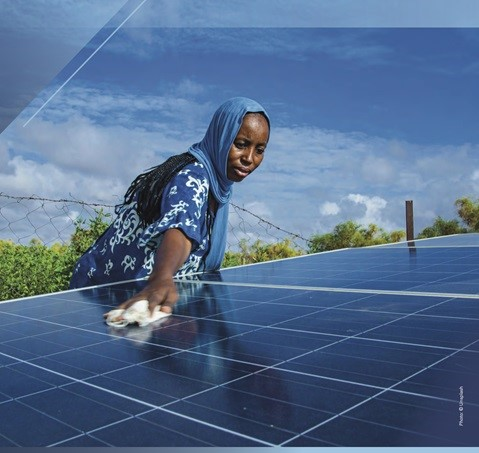
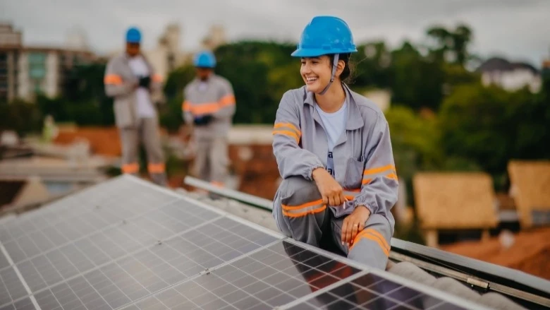
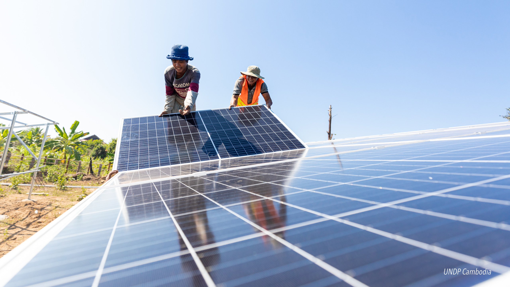
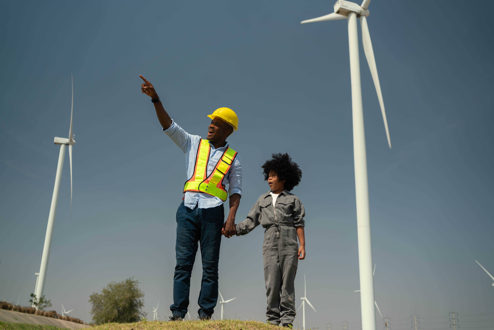
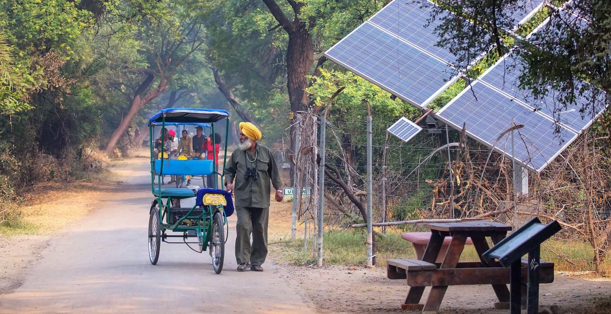

Access to electricity in the poorest countries has begun to accelerate, energy efficiency continues to improve and renewable energy is making gains in electricity sector.Despite this progress, some 800 million people remain without electricity while access to clean cooking fuels and technologies needs dedicated attention. In addition, if Sustainable Development Goals 7, 13 and related Goals are to be met, much higher levels of ambition are required with regard to renewable energy, including transportation and heating.
Source: Report of the Secretary-General, Special edition: progress towards the Sustainable Development Goals
The world is making good progress on increasing access to electricity and improving energy efficiency. However, millions of people throughout the world still lack such access, and progress on facilitating access to clean cooking fuels and technologies is too slow. The pandemic has highlighted the need for reliable and affordable electricity in health centres. In addition, a survey conducted in selected developing countries revealed that one quarter of the health facilities surveyed were not electrified, and another quarter had unscheduled outages, affecting their capacity to deliver essential health services. Such deficiencies weaken the health system's response to the current health crisis.
The global electrification rate rose, from 83 per cent in 2010 to 90 per cent by 2018. Latin America and the Caribbean and Eastern and South-Eastern Asia maintained strong progress, exceeding 98 per cent access to electricity by 2018. However, the world's deficit was increasingly concentrated in sub-Saharan Africa, where some 548 million persons, or 53 per cent of the population, lacked access to electricity.
Access to clean cooking fuels and technologies increased to 63 per cent in 2018, from 60 per cent in 2015 and 56 per cent in 2010. Still, 2.8 billion persons lacked such access and relied primarily on inefficient and polluting cooking systems. Because of the stagnant rate and rapid population growth, in sub-Saharan Africa, the number of people without access to clean fuels for cooking increased.
The renewable energy share of total final energy consumption gradually increased, from 16.3 per cent in 2010 to 17.0 per cent in 2015 and 17.3 per cent in 2017. Much faster growth is required to meet long-term climate goals.
Global primary energy intensity (the energy used per unit of GDP) improved by 2.2 per cent annually, from 5.2 per cent in 2015 to 5.0 per cent in 2017, but was still short of the 2.7 per cent annual rate needed to reach target 7.3.
International financial flows to developing countries in support of clean and renewable energy reached $21.4 billion in 2017, 13 per cent higher than in 2016 and a twofold increase from flows committed in 2010. Hydropower projects received 46 per cent of 2017 flows, while solar projects received 19 per cent, wind 7 per cent and geothermal 6 per cent.
Source: Progress towards the Sustainable Development Goals, Report of the Secretary-General, https://undocs.org/en/E/2020/57
Despite significant progress over the past decade on improving access to electricity, increasing renewable energy use in the electricity sector and improving energy efficiency, the world is still falling short in providing affordable, reliable, sustainable and modern energy for all. Clean and sustainable energy should be at the heart of the COVID-19 response and of efforts to combat climate change.
Global access to electricity increased from 83 per cent in 2010 to 90 per cent in 2019, with an increase in average annual electrification of 0.876 percentage points. The global access deficit decreased from 1.22 billion in 2010 to 759 million in 2019. Despite the significant effort made, there may still be as many as 660 million people without access worldwide in 2030. In addition, the COVID-19 pandemic will impede progress on future electrification.
In 2019, 66 per cent of the global population had access to clean cooking fuels and technologies. For the period 2010–2019, most of the increases in such access occurred in the most populous low- and middle-income countries and territories: Brazil, China, India, Indonesia and Pakistan. People reliant on polluting fuels and technologies are exposed to high levels of household air pollution with serious consequences for their cardiovascular and respiratory systems, increasing their vulnerability to diseases including the COVID-19 virus.
The share of renewable energy in total final energy consumption increased gradually from 16.4 per cent in 2010 to 17.1 per cent in 2018. However, the share of modern renewable sources in total final energy consumption rose by only 2.5 percentage points in a decade, remaining below 11 per cent in 2018. The pandemic is having a mixed impact on renewable energy development across end-use sectors: global electricity demand declined by 2 per cent in 2020 compared to 2019, but the use of renewables for power generation increased by almost 7 per cent year on year.
Global primary energy intensity increased from 5.6 megajoules per dollar of gross domestic product (GDP) in 2010 to 4.8 megajoules in 2018, an average annual rate of improvement of 2 per cent. While early estimates for 2019 also indicate an improvement of 2 per cent, the outlook for 2020 suggests a rate of only 0.8 per cent because of the pandemic. Annual improvement until 2030 will need to average 3 per cent if the Goal 7.3 target is to be met.
International financial flows to developing countries in support of clean and renewable energy reached $14 billion in 2018, 35 per cent lower than in 2017 but 32 per cent higher than in 2010. Hydropower projects received 27 per cent of flows in 2018, while projects relating to solar received 26 per cent, geothermal 8 per cent, wind 5 per cent and multiple or other renewable energies 34 per cent.
Developing countries had a renewable energy capacity of 219 watts per capita at the end of 2019, an increase of 7 per cent over the year but slightly less than the 8.8 per cent expansion in per capita capacity for 2018. Per capita hydropower capacity remained stable in 2019, as total capacity increased in line with population growth during the year at approximately 0.4 per cent. Solar and wind capacities both expanded much faster than population growth, leading to increases in per capita capacity of 22.2 and 11.3 per cent, respectively.
Source: Progress towards the Sustainable Development Goals – E/2021/58
Despite progress, there are still over 700 million people globally living in the dark and 2.4 billion cooking with harmful and polluting fuels. Although the use of renewable energy and energy efficiency have improved, progress is not fast enough to achieve Sustainable Development Goal 7. The war in Ukraine is driving up global energy prices and increasing energy insecurity in Europe. To respond to the energy crisis, some European countries plan to speed up the transition to renewables and increase investments in renewables and energy efficiency, while some other countries plan to bring about a resurgence of coal, putting the green transition at risk.
Between 2010 and 2020, the proportion of world population with access to electricity reached 91 per cent, up from 83 per cent, with 1.3 billion people gaining access. This still leaves 733 million people in the dark with more than three quarters of them living in sub-Saharan Africa. In the period 2018-2020, the annual access growth was 0.5 percentage points, which should accelerate to an annual average of 0.9 percentage points so that universal access can be achieved by 2030. This requires significant efforts to reach those living in low-income, fragile and conflict-affected countries.
In 2020, 69 per cent of the global population had access to clean cooking fuels and technologies. While more than half of those without access to clean cooking fuels live in Asia, 19 out of the 20 countries with the lowest percentage of people having access to clean cooking were least developed countries in Africa.
The share of renewable sources in total final energy consumption amounted to 17.7 per cent globally in 2019, which is less than one percentage point higher than the figure for 2015. The electricity sector records the largest share of renewables in total final energy consumption (26.2 per cent in 2019) and drives most of the growth in renewable energy use, while the heat and transport sectors have seen limited progress.
Global primary energy intensity—defined as global total energy supply per unit of GDP, improved from 5.6 megajoules per dollar (2017 purchasing power parity) in 2010 to 4.7 megajoules in 2019. Since 2015, global energy intensity has improved by 1.6 per cent per year on average, which is still short of the 3.2 per cent annual rate now needed to reach Sustainable Development Goal 7.3.
International financial flows to developing countries in support of clean and renewable energy reached $10.9 billion in 2019, 23.6 per cent lower than that in 2018 and representing a contraction even before the onset of the COVID-19 pandemic. A longer five-year moving average trend shows that average annual commitments decreased for the first time since 2008 by 5.5 per cent from $17.5 billion in 2014-18 to $16.6 billion in 2015-19.
Installed renewable energy-generating capacity in developing countries reached a record 245.7 watts per capita in 2020. Since 2015, renewable capacity per capita has increased by 57.6 per cent, but small island developing States, least developed countries and landlocked developing countries have lagged behind. It would take least developed countries and landlocked developing countries almost 40 years and small island developing States almost 15 years to reach the same level of progress reached by the developing countries on average in 2020.
Source: Progress Towards Sustainable Development Goals- Report of the Secretary-General
For more information, please, check https://unstats.un.org/sdgs/report/2022/
Access to electricity and clean cooking fuels has improved in many parts of the world, but 675 million people are yet to be connected to the grids and 2.3 billion are still cooking with unsafe and polluting fuels. The war in Ukraine and global economic uncertainty continue to cause significant volatility in energy prices, leading some countries to raise investments in renewables and others to increase reliance on coal, putting the green transition at risk. If the current pace continues, about 660 million people will still lack access to electricity and close to 2 billion people will continue to rely on polluting fuels and technologies for cooking by 2030. To ensure access to energy for all by 2030, we must accelerate electrification, increase investments in renewable energy sources and invest in improving electricity grids.
In 2022, global electricity access declined for the first time in a decade, primarily due to disruptions from COVID-19 and the Ukraine conflict. Despite improvements in energy intensity and renewable energy growth, international financial flows for clean energy in developing countries remain insufficient. At the current rate, 660 million people will still lack electricity and 1.8 billion will not have access to clean cooking by 2030. To achieve universal access to energy by 2030, we need to expedite electrification efforts, boost investments in renewable energy, enhance energy efficiency, and establish supportive policies and regulatory frameworks.
